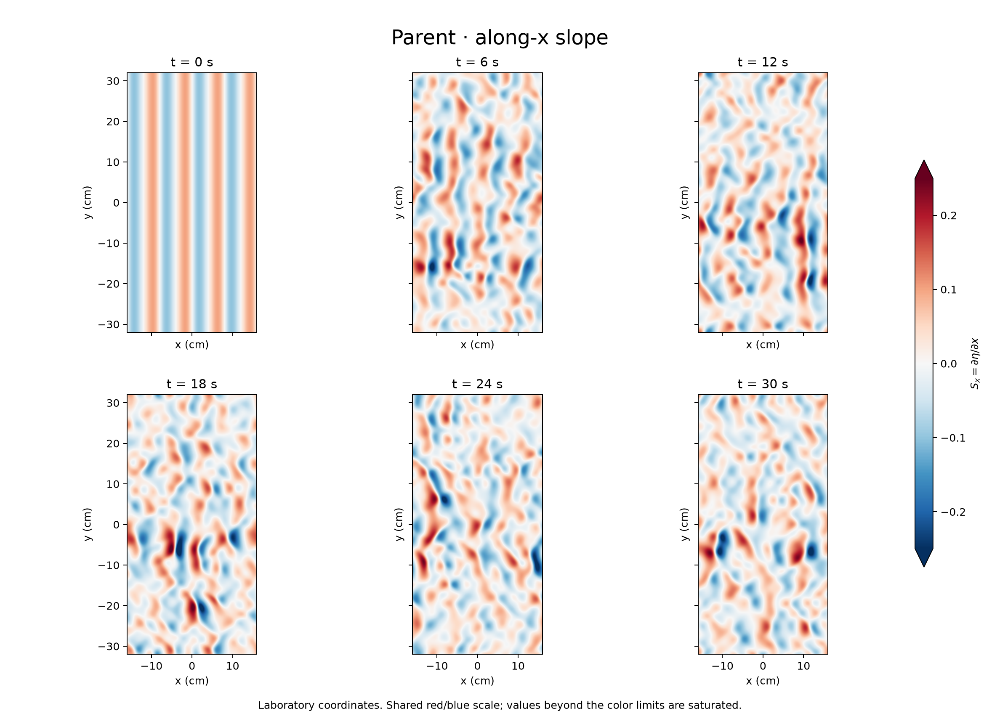
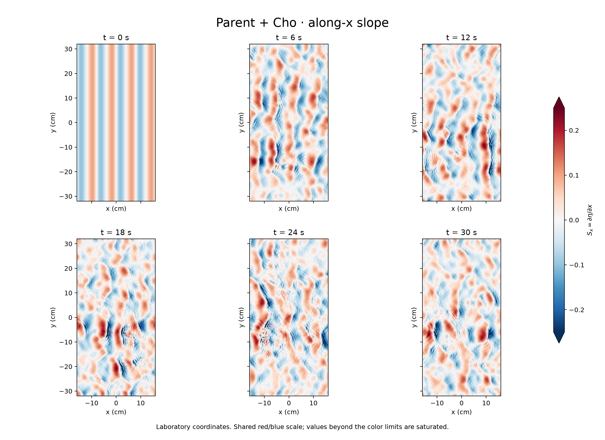
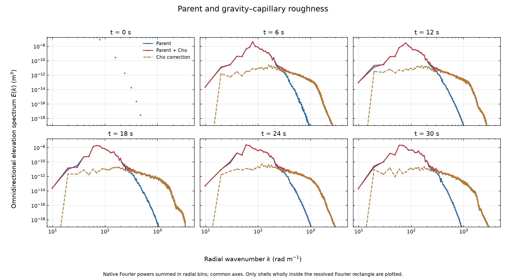
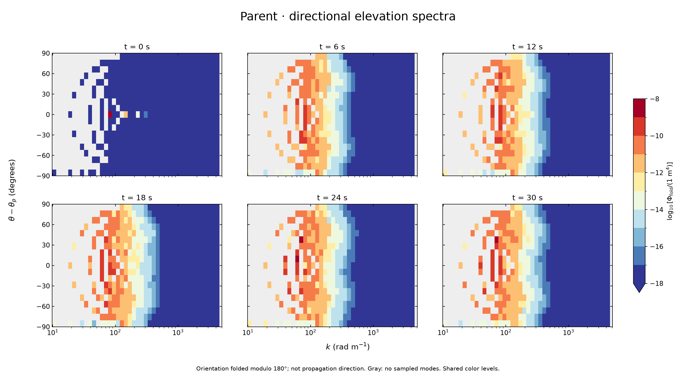
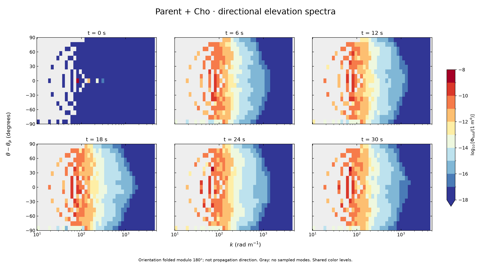
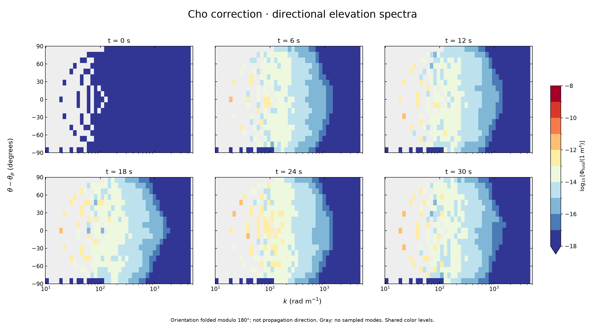
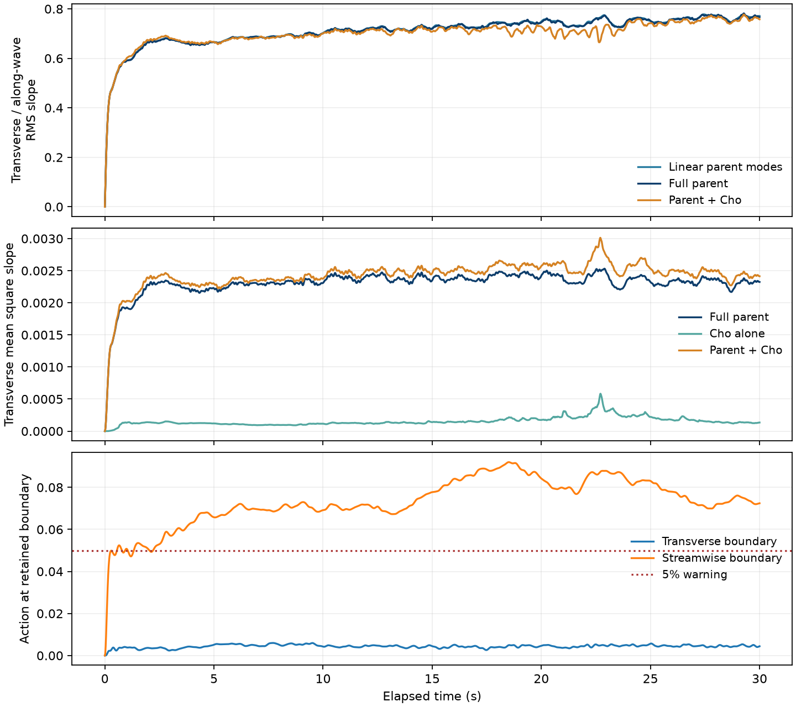

Initially ak = 0.1 waves with evolving Langmuir currents
Fresh, initially monochromatic ak = 0.1, 8 cm waves in the original horizontal domain with approximately doubled current resolution in all three directions. The parent wave field and three-dimensional Langmuir current evolve reciprocally for 30 seconds; passive Cho roughness uses 2.4× molecular damping.
Simulation, saved-data analysis, and videos are complete.
Gallery snapshot: 2026-11-24T09:47:09.095568+00:00. This page records saved evidence rather than querying the live queue.
The domain is 32 × 64 cm and 12 cm deep. Current resolution is 65 × 129 × 96, matching the completed ak = 0.2 finer-current case. Cho remains at 512 × 1024 (0.625 mm spacing), with the original 231 parent modes. The odd horizontal grid requirement makes the horizontal refinement slightly less than exactly twofold. The fixed physical-band current seed matches the new wide-domain experiment protocol; it differs from the older grid-white seed. The full surface movies show 30 physical seconds at 0.2× speed. The current movie defaults to real-time playback, with a speed selector.
Waves and tracer transport · ak = 0.1 versus 0.2
Four synchronized panels over 0–30 s: parent + Cho surfaces above, surface-released dye below. ak = 0.1 is on the left; ak = 0.2 is on the right. Both use 2.4× Cho damping and play at 0.2× speed.
The dye panels share a fixed, labeled concentration scale throughout. The nonlinear color mapping reveals dilute dye while retaining the concentrated surface release; there is no frame-by-frame rescaling or concentration clipping. Depth is enlarged 2× for visibility.
Tracer method and interpretation
Following Wagner et al. (2023), equation 3.13 and figure 7, the dye starts in the surface cell and is transported by the Lagrangian-mean current with diffusivity 10⁻⁷ m²/s. Identical initial concentration and surface inventory are used in both cases.
This is an offline passive-tracer calculation using the saved three-dimensional currents, linearly interpolated between their 0.1 s snapshots. It does not alter the waves or currents, and Cho does not feed back into the current. The saved-current cadence and the transport scheme’s spatial numerical diffusion limit small-scale interpretation. Tracer displays hold each saved 0.1 s state; surface movies retain their 0.01 s cadence. The clock is elapsed simulation time, starting from the pre-aged wind-drift state.
Checks cover tracer mass conservation, nonnegative concentration, periodic transport refinement, and a short half-timestep comparison. These are numerical consistency checks, not proof of convergence of the full turbulent mixing calculation.
Download the four-panel movie · Rendering details · Tracer checks
Validation and timing
Current advection and regular horizontal molecular diffusion use fourth-order operators; stretched-z and boundary diffusion remain second order. Fixed physical-band current perturbations permit a matched coarse/fine comparison. Their initialization differs from the earlier grid-white seed, so this is not a domain-size-only comparison with that run.
Current-refinement checks: passed.
| Parent/current seconds per step | 0.31102 |
|---|---|
| Cho seconds per step | 0.32945 |
| Estimated parent/current hours | 10.367 |
| Estimated Cho hours | 21.963 |
| Allocated CPUs | 8 |
| FFT workers | 4 |
Native warmed timing and full-grid two-second Cho integration. Extrapolated solve times exclude queueing, rendering, and changing late-time geometry cost.
Full parent evolution
The complete 0–30 s parent surface at 0.2× speed.
Full parent + Cho evolution
The same complete interval with Cho roughness, at 0.2× speed and physical surface heights.
Late roughness close-up
Parent and parent + Cho in the same fixed 32 × 32 cm laboratory window during 29.5–30 s, played at 0.1× speed. Every native surface point in the window is retained.
Underwater current structures
The complete wave-averaged current evolution, defaulting to real-time playback. Instantaneous wave orbital velocity is not included.
Along-x slope
Laboratory-frame Sx = ∂η/∂x at six times. Parent and parent + Cho share the same red/blue color limits; values outside those limits are saturated. Native-grid slope statistics and the color-limit rule are included in the directional-spectrum metadata.


Omnidirectional elevation spectra
Six snapshots at 0, 6, 12, 18, 24 and 30 seconds compare parent (blue), parent + Cho (red), and Cho alone (dashed amber). The integral of E(k) over radial wavenumber recovers elevation variance. Plots show complete radial shells; the CSV retains corner modes too.

Directional elevation spectra
Six-time panels use the logarithmic-wavenumber and relative-orientation layout of Lenain & Melville (2017), Fig. 3. Conjugate wavevectors are folded modulo 180°: these show orientation, not propagation direction. Parent and complete surfaces share color limits. Gray cells have no sampled Fourier modes.



Wave and current diagnostics
Parent, Cho and total MSS · Band-resolved MSS · Transverse wave response · Current diagnostics · Numerical summary

Interpretation
Direct aerodynamic wave growth and Cho feedback into the parent/current system remain absent. A refined grid is not proof of resolved DNS or validity of the weakly nonlinear surface model. Strong Cho slope extremes, parent mapping, retained-mode boundaries and high-wavenumber slope power require separate checks. Finite-domain saturation does not establish domain-independent saturation. The 0.01-second full-surface output cadence does not resolve the temporal phase of every retained capillary wave.